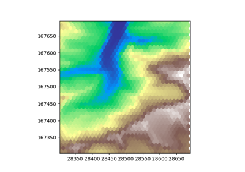
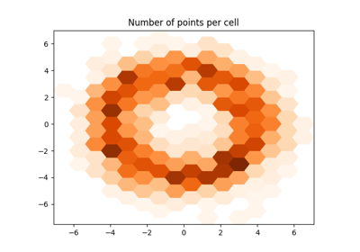
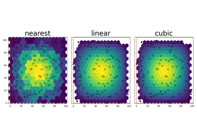

Example Gallery
The examples listed here are intended to familiarize the reader with the workflow of GridKit, and to serve as inspiration regarding the types of problems that can be solved using GridKit.
Cell centric
These examples highlight operations where specific cells are targeted.

Cell selection using other grids
Cell selection using other grids
Grid definitions
These examples highlight the different ways grids can be constructed and manipulated.
Hexagon grids
Raster operations
These examples show how traditional raster data can be analysed and modified using GridKit.


Resampling
Coordinate transformations
Combining land cover and DEM
Vector data interactions
The following examples highlight the interactions between vector data and regular grids.

Aggregate from points


Interpolate from points